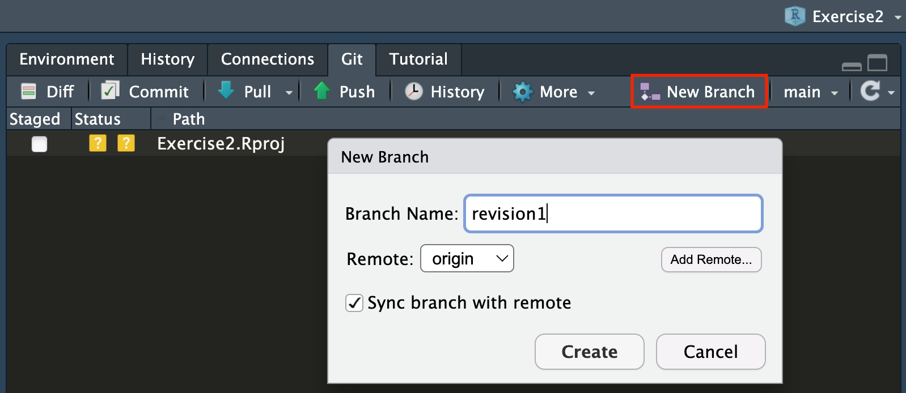
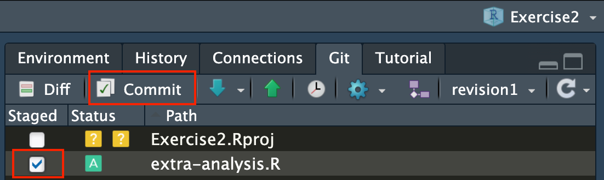
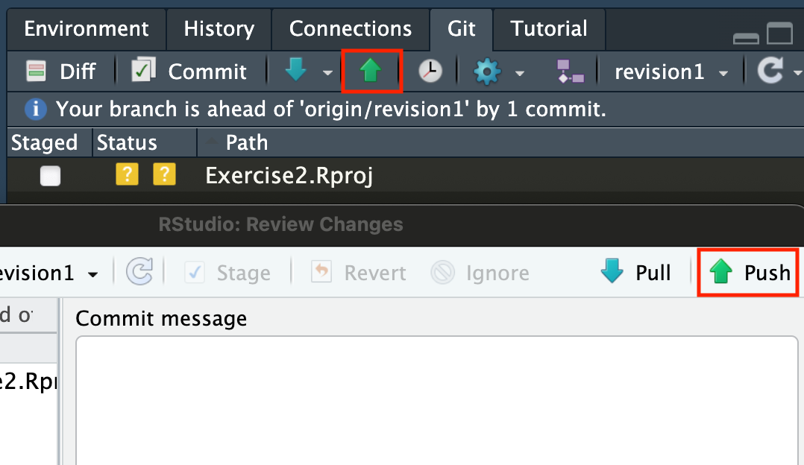
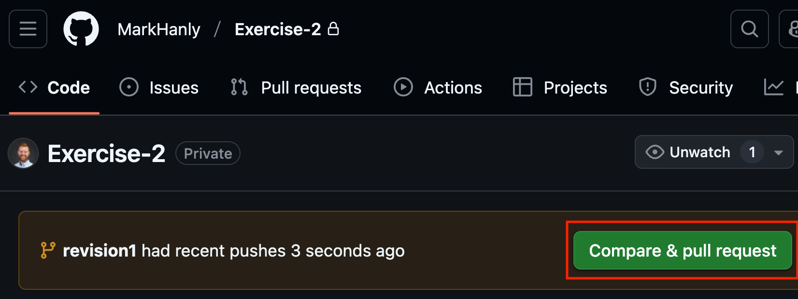
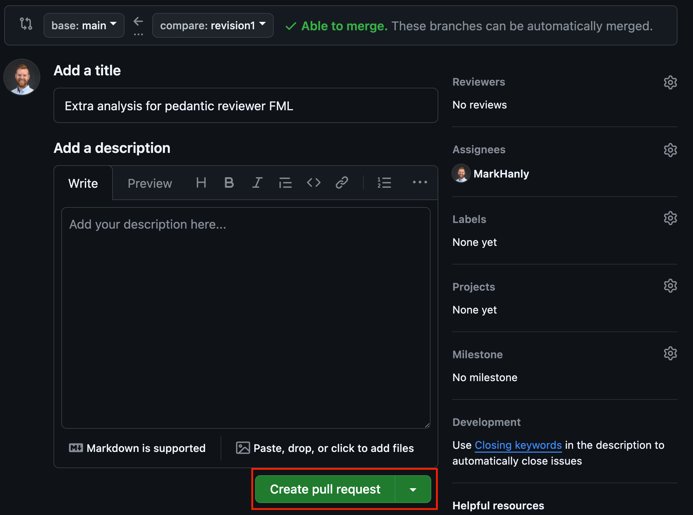
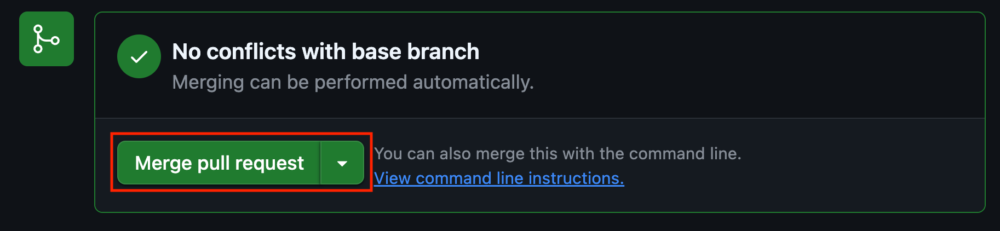
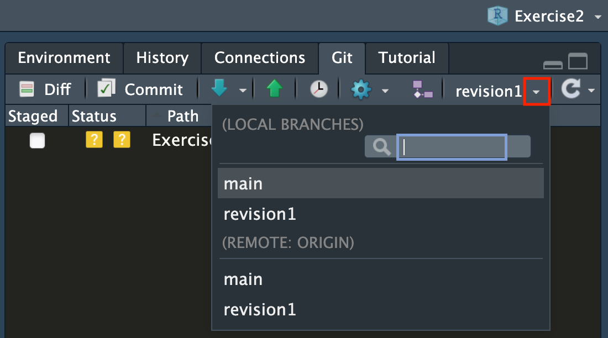
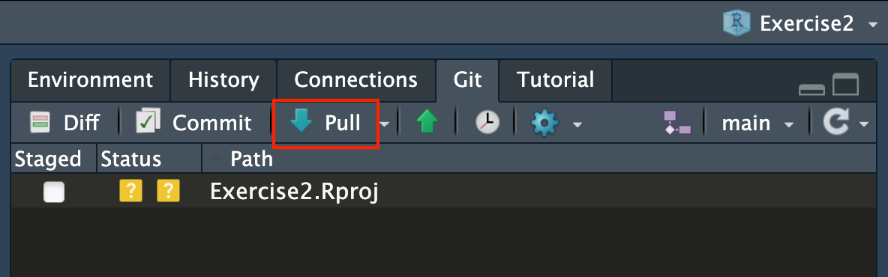

Exercise 3: Branching and pull requests
Overview: If you are collaborating with others you will need to get work on local branches to avoid clashes. Here you can practice creating a new branch in RStudio then submitting a Merge Request to GitHub
1 Create a new branch in RStudio
1.1 Create a new branch
 * In the Git panel, click the New Branch icon to launch this dialogue box * Name the new branch something short and meaningful (no spaces!) * Click Create * Close the pop up
1.2 Create a new file, then add and commit

Notes
- Create and save a new R Script, e.g.
extra-analysis.R - Add and commit this file in the usual way
- Remember to add a short, meaningful commit message
1.3 Push your branch to GitHub

- You can push from either (i) the Git pane or (ii) the commit dialogue box
2 Merge the pull request in GitHub
2.1 Click Compare & Pull Request

Notes
- This will create a new pull request
- You got this ❤️
2.2 Click Create pull request

Notes
- You should see the green tick Able to merge
- In more complex projects there may be conflicts between user edits, but one step at a time.
- Here you could optionally add labels, assign reviewers etc
- When you are ready click Create pull request.
2.3 Merge pull request
 Notes
- Because there are no conflicts, merging can be performed automatically
- When you are ready click Merge pull request then Confirm merge
3 In RStudio, pull the updated main branch
3.1 Switch back to the main branch

Notes
- If you left your additional file open in RStudio you might now get a pop-up to say it has been deleted. Don’t panic, it is just not on the main branch (yet!)
At this point you will have the option to delete your branch in GitHub. You can if you like, but if you think you might make more related changes later you can leave it open.
3.2 Pull the remote changes to your local repo
 Notes
- This will pull the changes in the remote branch to your local repo
If you have left your branch open, you can change back if there are more edits needed.
Made it this far? Legend!